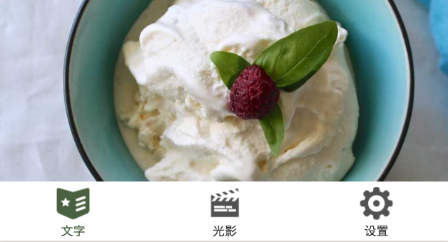

<!DOCTYPE html>
<html lang="en-US">
  <head>
    <meta charset="utf-8">
    <meta name="viewport" content="width=device-width,initial-scale=1">
    <title>第七章 新特性：Component组件化编程 | Lin Books</title>
    <meta name="description" content="This is Lin books">
    <link rel="icon" href="/logo.png">
  <link rel="manifest" href="/manifest.json">
  <meta name="theme-color" content="#3eaf7c">
  <meta name="apple-mobile-web-app-capable" content="yes">
  <meta name="apple-mobile-web-app-status-bar-style" content="black">
  <link rel="apple-touch-icon" href="/icons/apple-touch-icon-152x152.png">
  <link rel="mask-icon" href="/icons/safari-pinned-tab.svg" color="#3eaf7c">
  <meta name="msapplication-TileImage" content="/icons/msapplication-icon-144x144.png">
  <meta name="msapplication-TileColor" content="#000000">
    
    <link rel="preload" href="/assets/css/0.styles.bf0c4e8a.css" as="style"><link rel="preload" href="/assets/js/app.65ff0979.js" as="script"><link rel="preload" href="/assets/js/2.e4f9a30a.js" as="script"><link rel="preload" href="/assets/js/11.5d958c10.js" as="script"><link rel="preload" href="/assets/js/20.230bd3aa.js" as="script"><link rel="preload" href="/assets/js/9.696f16a3.js" as="script"><link rel="preload" href="/assets/js/8.549f358e.js" as="script"><link rel="prefetch" href="/assets/js/10.5ea920f5.js"><link rel="prefetch" href="/assets/js/12.40d782b6.js"><link rel="prefetch" href="/assets/js/13.bffa1460.js"><link rel="prefetch" href="/assets/js/14.0cda0556.js"><link rel="prefetch" href="/assets/js/15.29c04be0.js"><link rel="prefetch" href="/assets/js/16.6fdc35eb.js"><link rel="prefetch" href="/assets/js/17.df71b7fa.js"><link rel="prefetch" href="/assets/js/18.aefe2814.js"><link rel="prefetch" href="/assets/js/19.cde7ada7.js"><link rel="prefetch" href="/assets/js/21.8c6c6090.js"><link rel="prefetch" href="/assets/js/22.c3b2f196.js"><link rel="prefetch" href="/assets/js/23.a2ac26bf.js"><link rel="prefetch" href="/assets/js/24.817cf126.js"><link rel="prefetch" href="/assets/js/25.3d559204.js"><link rel="prefetch" href="/assets/js/26.4a57ce1b.js"><link rel="prefetch" href="/assets/js/27.fb9f47ac.js"><link rel="prefetch" href="/assets/js/28.6957aa1f.js"><link rel="prefetch" href="/assets/js/29.9d1a4ac1.js"><link rel="prefetch" href="/assets/js/3.25622c32.js"><link rel="prefetch" href="/assets/js/30.f50d7b07.js"><link rel="prefetch" href="/assets/js/31.5c1d0c21.js"><link rel="prefetch" href="/assets/js/32.51e38426.js"><link rel="prefetch" href="/assets/js/33.40e7a0f3.js"><link rel="prefetch" href="/assets/js/34.0fae9910.js"><link rel="prefetch" href="/assets/js/4.59a6598d.js"><link rel="prefetch" href="/assets/js/5.01c0a19e.js"><link rel="prefetch" href="/assets/js/6.5e79bf9b.js"><link rel="prefetch" href="/assets/js/7.bd40beab.js">
    <link rel="stylesheet" href="/assets/css/0.styles.bf0c4e8a.css">
  </head>
  <body>
    <div id="app" data-server-rendered="true"><div class="theme-container" data-v-2756d1a5><header class="navbar" data-v-2756d1a5><div class="sidebar-button"><svg xmlns="http://www.w3.org/2000/svg" aria-hidden="true" role="img" viewBox="0 0 448 512" class="icon"><path fill="currentColor" d="M436 124H12c-6.627 0-12-5.373-12-12V80c0-6.627 5.373-12 12-12h424c6.627 0 12 5.373 12 12v32c0 6.627-5.373 12-12 12zm0 160H12c-6.627 0-12-5.373-12-12v-32c0-6.627 5.373-12 12-12h424c6.627 0 12 5.373 12 12v32c0 6.627-5.373 12-12 12zm0 160H12c-6.627 0-12-5.373-12-12v-32c0-6.627 5.373-12 12-12h424c6.627 0 12 5.373 12 12v32c0 6.627-5.373 12-12 12z"></path></svg></div> <div class="search-box"><input aria-label="Search" autocomplete="off" spellcheck="false" placeholder="请输入搜索内容" value=""> <!----></div> <div class="links"><nav class="nav-links can-hide"><div class="nav-item"><a href="/" class="nav-link">主页</a></div><div class="nav-item"><a href="/lin/lin-ui/" class="nav-link router-link-active">lin-ui</a></div><div class="nav-item"><a href="/lin/koa2/" class="nav-link">koa2电子书</a></div><div class="nav-item"><a href="/lin/lin-cms-php/" class="nav-link">lin-cms-php</a></div> <!----></nav> <div class="logo can-show" data-v-7dfc7a80></div></div></header> <div class="sidebar-mask" data-v-2756d1a5></div> <aside class="sidebar normal" data-v-2756d1a5><!----> <!----> <!----> <nav class="nav-links"><div class="nav-item"><a href="/" class="nav-link">主页</a></div><div class="nav-item"><a href="/lin/lin-ui/" class="nav-link router-link-active">lin-ui</a></div><div class="nav-item"><a href="/lin/koa2/" class="nav-link">koa2电子书</a></div><div class="nav-item"><a href="/lin/lin-cms-php/" class="nav-link">lin-cms-php</a></div> <!----></nav> <div class="logo" data-v-7dfc7a80 data-v-2756d1a5></div> <div class="info-container" data-v-2756d1a5><div class="content author" data-v-2756d1a5><div class="author-container" data-v-4cbd787c> <div class="author-info" data-v-4cbd787c><p name="Kitty" class="name" data-v-4cbd787c>Kitty</p> <span job="某云网技术总监" class="job" data-v-4cbd787c>某云网技术总监</span></div></div></div> <div class="content adverse" data-v-2756d1a5><div class="adverse" data-v-2adbdddb><div class="book-name" data-v-2adbdddb>微信小程序开发与实战</div> </div></div></div> <ul class="sidebar-links"><li><section class="sidebar-group collapsable depth-0"><p class="sidebar-heading open"><span>Lin-ui</span> <span class="arrow down"></span></p> <ul class="sidebar-links sidebar-group-items"><li><a href="/lin/lin-ui/tutorial/" class="sidebar-link">第十章 完善文章页面</a></li><li><a href="/lin/lin-ui/tutorial/seven.html" class="active sidebar-link">第七章 新特性：Component组件化编程</a><ul class="sidebar-sub-headers"><li class="sidebar-sub-header"><a href="/lin/lin-ui/tutorial/seven.html#_11-1-小程序的tab选项卡" class="sidebar-link">11.1 小程序的tab选项卡</a></li><li class="sidebar-sub-header"><a href="/lin/lin-ui/tutorial/seven.html#_11-2-component-vs-template" class="sidebar-link">11.2  Component vs Template</a></li><li class="sidebar-sub-header"><a href="/lin/lin-ui/tutorial/seven.html#_11-3-component的基本定义" class="sidebar-link">11.3 Component的基本定义</a></li><li class="sidebar-sub-header"><a href="/lin/lin-ui/tutorial/seven.html#_11-4-component的属性" class="sidebar-link">11.4 Component的属性</a></li><li class="sidebar-sub-header"><a href="/lin/lin-ui/tutorial/seven.html#_11-5-component的js文件结构" class="sidebar-link">11.5 Component的JS文件结构</a></li></ul></li><li><a href="/lin/lin-ui/tutorial/eight.html" class="sidebar-link">第八章 新特性：Component组件化编程</a></li><li><a href="/lin/lin-ui/tutorial/nine.html" class="sidebar-link">第九章 新特性：Component组件化编程</a></li><li><a href="/lin/lin-ui/tutorial/eleven.html" class="sidebar-link">第十一章 新特性：Component组件化编程</a></li></ul></section></li></ul> </aside> <main class="page" data-v-2756d1a5> <div class="main-page"><div class="content default"><h1 id="第七章-新特性：component组件化编程"><a href="#第七章-新特性：component组件化编程" aria-hidden="true" class="header-anchor">#</a> 第七章 新特性：Component组件化编程</h1> <blockquote><p>Component自定义组件可以说是这两年小程序最重要的特性支持，直接改变了小程序的开发方式</p></blockquote> <h2 id="_11-1-小程序的tab选项卡"><a href="#_11-1-小程序的tab选项卡" aria-hidden="true" class="header-anchor">#</a> 11.1 小程序的tab选项卡</h2> <p>从本章开始，我们将着手编写Orange Can项目的电影部分。电影部分同文章部分属于同一级别，我们需要使用小程序提供的tab选项卡来实现电影、文章和设置的切换。下图是我们需要的效果:
</p><div align="center"></div>
需要注意的是，我们不需要自己编写代码实现tab选项卡。小程序提供了现成的tab选项卡，我们只需要在app.json中配置一些参数即可实现tab选项卡的效果。<p></p> <p>tab选项卡的配置是通过app.json文件中的tabBar选项来实现的。在配置tab选项卡之前，我们在pages目录下新建一个movie文件夹，并在它的下面新建movie页面；接着，pages目录下新建setting目录并在其下新建setting页面。</p> <p>接着配置文章和电影页面的tab选项卡，在app.json中添加如下代码。</p> <div class="language-json {highlight=[3-10]} line-numbers-mode"><pre class="language-json"><code><span class="token punctuation">{</span>
    <span class="token property">&quot;pages&quot;</span><span class="token operator">:</span><span class="token punctuation">[</span>

    <span class="token punctuation">]</span><span class="token punctuation">,</span>
    <span class="token property">&quot;tabBar&quot;</span><span class="token operator">:</span> <span class="token punctuation">{</span>
        <span class="token property">&quot;borderStyle&quot;</span><span class="token operator">:</span> <span class="token string">&quot;white&quot;</span><span class="token punctuation">,</span>
        <span class="token property">&quot;selectedColor&quot;</span><span class="token operator">:</span> <span class="token string">&quot;#4A6141&quot;</span><span class="token punctuation">,</span>
        <span class="token property">&quot;color&quot;</span><span class="token operator">:</span> <span class="token string">&quot;#333&quot;</span><span class="token punctuation">,</span>
        <span class="token property">&quot;backgroundColor&quot;</span><span class="token operator">:</span> <span class="token string">&quot;#fff&quot;</span><span class="token punctuation">,</span>
        <span class="token property">&quot;position&quot;</span><span class="token operator">:</span> <span class="token string">&quot;bottom&quot;</span><span class="token punctuation">,</span>
        <span class="token property">&quot;list&quot;</span><span class="token operator">:</span> <span class="token punctuation">[</span>
        <span class="token punctuation">{</span>
            <span class="token property">&quot;pagePath&quot;</span><span class="token operator">:</span> <span class="token string">&quot;pages/post/post&quot;</span><span class="token punctuation">,</span>
            <span class="token property">&quot;text&quot;</span><span class="token operator">:</span> <span class="token string">&quot;文字&quot;</span><span class="token punctuation">,</span>
            <span class="token property">&quot;iconPath&quot;</span><span class="token operator">:</span> <span class="token string">&quot;/images/icon/wx_app_news.png&quot;</span><span class="token punctuation">,</span>
            <span class="token property">&quot;selectedIconPath&quot;</span><span class="token operator">:</span> <span class="token string">&quot;/images/icon/wx_app_news@HL.png&quot;</span>
        <span class="token punctuation">}</span><span class="token punctuation">,</span>
        <span class="token punctuation">{</span>
            <span class="token property">&quot;pagePath&quot;</span><span class="token operator">:</span> <span class="token string">&quot;pages/movie/movie&quot;</span><span class="token punctuation">,</span>
            <span class="token property">&quot;text&quot;</span><span class="token operator">:</span> <span class="token string">&quot;光影&quot;</span><span class="token punctuation">,</span>
            <span class="token property">&quot;iconPath&quot;</span><span class="token operator">:</span> <span class="token string">&quot;images/icon/wx_app_movie.png&quot;</span><span class="token punctuation">,</span>
            <span class="token property">&quot;selectedIconPath&quot;</span><span class="token operator">:</span> <span class="token string">&quot;images/icon/wx_app_movie@HL.png&quot;</span>
        <span class="token punctuation">}</span><span class="token punctuation">,</span>
        <span class="token punctuation">{</span>
            <span class="token property">&quot;pagePath&quot;</span><span class="token operator">:</span> <span class="token string">&quot;pages/setting/setting&quot;</span><span class="token punctuation">,</span>
            <span class="token property">&quot;text&quot;</span><span class="token operator">:</span> <span class="token string">&quot;设置&quot;</span><span class="token punctuation">,</span>
            <span class="token property">&quot;iconPath&quot;</span><span class="token operator">:</span> <span class="token string">&quot;images/icon/wx_app_setting.png&quot;</span><span class="token punctuation">,</span>
            <span class="token property">&quot;selectedIconPath&quot;</span><span class="token operator">:</span> <span class="token string">&quot;images/icon/wx_app_setting@HL.png&quot;</span>
        <span class="token punctuation">}</span>
        <span class="token punctuation">]</span>
    <span class="token punctuation">}</span>
<span class="token punctuation">}</span>
</code></pre> <div class="line-numbers-wrapper"><span class="line-number">1</span><br><span class="line-number">2</span><br><span class="line-number">3</span><br><span class="line-number">4</span><br><span class="line-number">5</span><br><span class="line-number">6</span><br><span class="line-number">7</span><br><span class="line-number">8</span><br><span class="line-number">9</span><br><span class="line-number">10</span><br><span class="line-number">11</span><br><span class="line-number">12</span><br><span class="line-number">13</span><br><span class="line-number">14</span><br><span class="line-number">15</span><br><span class="line-number">16</span><br><span class="line-number">17</span><br><span class="line-number">18</span><br><span class="line-number">19</span><br><span class="line-number">20</span><br><span class="line-number">21</span><br><span class="line-number">22</span><br><span class="line-number">23</span><br><span class="line-number">24</span><br><span class="line-number">25</span><br><span class="line-number">26</span><br><span class="line-number">27</span><br><span class="line-number">28</span><br><span class="line-number">29</span><br><span class="line-number">30</span><br><span class="line-number">31</span><br><span class="line-number">32</span><br></div></div><p>tabBar配置项决定了导航栏的选项以及样式。通常，它有以下若干配置子项：</p> <ul><li>color  未选中时的tab选项卡文字颜色。</li> <li>selectedColor  选中时tab选项卡文字颜色。</li> <li>backgroundColor  tab选项卡背景颜色。</li> <li>borderStyle  tab选项卡上边框的颜色，注意它只支持black和white两个取值，默认是black。</li> <li>list  tab选项卡列表，是一个数组，接受一组object对象，我们在后面会具体给出每个对象的属性。</li> <li>position  可选值有bottom和top，默认为bottom，指定选项卡位于底部还是顶部。</li></ul> <p>再来具体看看list这个数组。list数组的每一项都是一个object对象，每个object对象代表一个tab选项，最少必须有两个tab选项，而最多只能有5个tab选项。上面的示例代码中我们配置了3个选项卡。tab选项卡出现的顺序由数组中object的顺序来决定。object对象包含以下几个属性：</p> <ul><li>pagePath  每个tab选项的页面路径。注意，用于pagePath的路径必须预先已在app.json的pages中定义。</li> <li>text  tab选项卡上出现的文字。</li> <li>iconPath  tab选项卡上的图片路径，图片大小限制为最大40KB，建议尺寸为81px × 81px。</li> <li>selectedIconPath  选中是的图片路径，图片大小限制为最大40kb，建议尺寸为81px × 81px。</li></ul> <p>这里要特别注意，对于pagePath路径，一定不要以“/”开头。即使它们看起来是绝对路径也不要在路径前面加“/”。在pagePath前面加“/”将导致错误。iconPath和selectedIconPath前可以加&quot;/&quot;也可以不加&quot;/&quot;。</p> <p>此时，我们保存并运行代码，会发现页面停留在welcome页面，点击“开启小程序之旅”，页面没有反应。如果在welcome.js的navigateTo中设置了fail函数，点击“开启小程序之旅”就将进入navigateTo的fail函数中。
为什么会出现这样的情况？
我们在之前章节中介绍redirectTo和navigateTo时，提到过这两个方法只能用于不带tab选项卡的页面。此时要跳转的post页面已经被设置成了带选项卡的页面，所以无论使用redirectTo还是navigateTo都不能成功跳转，必须使用另外一个导航方法（wx.switchTab方法），才能成功跳转到带有tab选项卡的页面。</p> <p>修改welcome.js页面的onTapJump方法。</p> <div class="language-js line-numbers-mode"><pre class="language-js"><code><span class="token function-variable function">onTapJump</span><span class="token punctuation">:</span> <span class="token keyword">function</span> <span class="token punctuation">(</span><span class="token parameter">event</span><span class="token punctuation">)</span> <span class="token punctuation">{</span>
    wx<span class="token punctuation">.</span><span class="token function">switchTab</span><span class="token punctuation">(</span><span class="token punctuation">{</span>
        url<span class="token punctuation">:</span> <span class="token string">&quot;../post/post&quot;</span><span class="token punctuation">,</span>
        <span class="token function-variable function">success</span><span class="token punctuation">:</span> <span class="token keyword">function</span> <span class="token punctuation">(</span><span class="token punctuation">)</span> <span class="token punctuation">{</span>
            console<span class="token punctuation">.</span><span class="token function">log</span><span class="token punctuation">(</span><span class="token string">&quot;jump success&quot;</span><span class="token punctuation">)</span>
        <span class="token punctuation">}</span><span class="token punctuation">,</span>
        <span class="token function-variable function">fail</span><span class="token punctuation">:</span> <span class="token keyword">function</span> <span class="token punctuation">(</span><span class="token punctuation">)</span> <span class="token punctuation">{</span>
            console<span class="token punctuation">.</span><span class="token function">log</span><span class="token punctuation">(</span><span class="token string">&quot;jump failed&quot;</span><span class="token punctuation">)</span>
        <span class="token punctuation">}</span><span class="token punctuation">,</span>
        <span class="token function-variable function">complete</span><span class="token punctuation">:</span> <span class="token keyword">function</span> <span class="token punctuation">(</span><span class="token punctuation">)</span> <span class="token punctuation">{</span>
            console<span class="token punctuation">.</span><span class="token function">log</span><span class="token punctuation">(</span><span class="token string">&quot;jump complete&quot;</span><span class="token punctuation">)</span>
        <span class="token punctuation">}</span>
    <span class="token punctuation">}</span><span class="token punctuation">)</span><span class="token punctuation">;</span>
<span class="token punctuation">}</span>
</code></pre> <div class="line-numbers-wrapper"><span class="line-number">1</span><br><span class="line-number">2</span><br><span class="line-number">3</span><br><span class="line-number">4</span><br><span class="line-number">5</span><br><span class="line-number">6</span><br><span class="line-number">7</span><br><span class="line-number">8</span><br><span class="line-number">9</span><br><span class="line-number">10</span><br><span class="line-number">11</span><br><span class="line-number">12</span><br><span class="line-number">13</span><br><span class="line-number">14</span><br></div></div><p>以上代码仅仅是将原先所调用的wx.navigateTo修改成了wx.switchTab。保存并运行代码，此时再次点击welcome页面的“开启小程序之旅”，可以成功打开post页面。此时的post页面底部出现了一个tab选项卡。</p> <p>可以通过点击【文字】、【光影】、【设置】进行页面的切换。</p> <h2 id="_11-2-component-vs-template"><a href="#_11-2-component-vs-template" aria-hidden="true" class="header-anchor">#</a> 11.2  Component vs Template</h2> <p>在本书第一版中，我们大量使用了template模板来构建电影部分的页面。但正如同我们所说，现在的小程序已经支持组件化，组件化才是正确的编程方式。那么template模板和Component自定义组件有什么不同呢？</p> <p>我们之前其实也谈到过，template仅仅是html和css层面的复用，它其实只是一个“占位符”，并不是真正的组件。真正的组件必须是html、css和js这三个层面的复用，也就是说必须要能够将骨架、样式和逻辑封装在一起才算是组件。但template不行，它不能封装js，也就意味着它不能封装业务逻辑。</p> <p>官方文档中有一段对Cmponent自定义组件组件的描述：</p> <blockquote><p>开发者可以将页面内的功能模块抽象成自定义组件，以便在不同的页面中重复使用；也可以将复杂的页面拆分成多个低耦合的模块，有助于代码维护。自定义组件在使用时与基础组件非常相似。</p></blockquote> <p>这段描述非常精准甚至是精彩的描述了自定义组件的作用：</p> <p>第一，自定义组件有很好的复用性。我们之前课程中所使用Lin UI的自定义组件就很好的体现了这一点</p> <p>第二，自定义组件的第二点好处可能是很多开发者没有体会到的：它可以很好的分离代码、降低代码的耦合度。我们在做项目开发时，我们所编写的代码块可能并不需要“复用”。那此时，我们还有必要封装自定义组件吗？笔者的观点是：小型的非正式的项目用不用都无所谓；但中大型的项目，组件化是非常好的代码分离的方式，即使你封装的组件可能只被使用了一次。</p> <p>因为中大型的项目代码非常复杂，如果我们不把代码分离开，就会造成所有代码都写在Page的js文件中。读者朋友可以想象，一个js文件有1000多行代码是什么概念。</p> <p>读者朋友也可以再回过头来看看post-comment这个页面，无论是wxml、wxss还是js文件代码代码量都非常大。如果我们能够将这些代码拆分成组件，然后在Page中使用这些组件，是不是就可以做到很好的代码分离？</p> <p>最后，自定义组件其实并不难理解。官方文档描述中最后一句可以帮助开发者非常好的理解其概念：自定义组件和小程序的原生基础组件（image、button等）非常相识。只不过原生基础组件是微信官方给你写好的，而自定义组件是你自己编写的或者是其他开发者“帮你”编写的，比如Lin UI就是一组帮你写好的自定义组件。</p> <h2 id="_11-3-component的基本定义"><a href="#_11-3-component的基本定义" aria-hidden="true" class="header-anchor">#</a> 11.3 Component的基本定义</h2> <p>我们先来制作一个非常简单的小组件，这个小组件可能没有实际意义，但它可以帮助我们熟悉Component的一些基本概念和用法。通常情况下，一个项目里所有的组件都集中放置在一个目录下。当然，这并不是必须的，但这样做会便于我们管理众多的Component。</p> <p>现在，在项目的根目录下新建一个component目录，然后在这个目录下新建一个子目录：button。我们自己来写一个简单的按钮。它可能没有Lin UI的button功能强大，但正如同我们之前所说，越简单越容易帮助我们理解Component。</p> <p>在button目录下新建组件（右键→【新建Component】），接着输入index，开发工具会自动新建4个名为index的文件。这4个文件的类型同页面的4个文件类型是一模一样的。为了行文方便，我们在后续章节中统一将Component自定义组件简称为组件。</p> <p>读者可能会奇怪，我们在新建页面时都会用页面的名称，比如：post、post-detail来命名页面文件名。但组件这里我们确实用的是index，这是为什么呢？这是因为组件的名称定义并不取决组件的文件名称，而是取决于引用组件时所定义的名称。看下面的代码，我们之前在引用Lin UI时已经看到过：</p> <div class="language-json line-numbers-mode"><pre class="language-json"><code><span class="token punctuation">{</span>
  <span class="token property">&quot;usingComponents&quot;</span><span class="token operator">:</span> <span class="token punctuation">{</span>
    <span class="token property">&quot;l-button&quot;</span><span class="token operator">:</span> <span class="token string">&quot;/lin-ui/button/index&quot;</span><span class="token punctuation">,</span>
    <span class="token property">&quot;l-icon&quot;</span><span class="token operator">:</span> <span class="token string">&quot;/lin-ui/icon/index&quot;</span>
  <span class="token punctuation">}</span>
<span class="token punctuation">}</span>
</code></pre> <div class="line-numbers-wrapper"><span class="line-number">1</span><br><span class="line-number">2</span><br><span class="line-number">3</span><br><span class="line-number">4</span><br><span class="line-number">5</span><br><span class="line-number">6</span><br></div></div><p>组件真正的命名定义其实是在引用页面的usingComponents里定义的，它和组件的文件名是没有关系的。比如，上面的代码我们将Lin UI的button定义成了“l-button”，你也可以定义成其他的，随便。</p> <p>所以，我们通常都会把组件的4个文件的名字统一成index。如果你想把文件名命名成其他的比如button.wxml、button.wxss... 这也是可以的。</p> <p>至于为什么我们都在自定义组件的前面加上一个前缀&quot;l-&quot; ？这是为了和其他组件做命名上的区分，防止定义冲突。l是林间有风团队 Lin 的第一个字母。</p> <p>我们打开component/button/index.wxml，在其中添加以下代码：</p> <div class="language-html line-numbers-mode"><pre class="language-html"><code><span class="token tag"><span class="token tag"><span class="token punctuation">&lt;</span>view</span> <span class="token attr-name">class</span><span class="token attr-value"><span class="token punctuation">=</span><span class="token punctuation">&quot;</span>journey-container<span class="token punctuation">&quot;</span></span><span class="token punctuation">&gt;</span></span>
  <span class="token tag"><span class="token tag"><span class="token punctuation">&lt;</span>text</span> <span class="token attr-name">class</span><span class="token attr-value"><span class="token punctuation">=</span><span class="token punctuation">&quot;</span>journey<span class="token punctuation">&quot;</span></span><span class="token punctuation">&gt;</span></span>开启小程序之旅<span class="token tag"><span class="token tag"><span class="token punctuation">&lt;/</span>text</span><span class="token punctuation">&gt;</span></span>
<span class="token tag"><span class="token tag"><span class="token punctuation">&lt;/</span>view</span><span class="token punctuation">&gt;</span></span>
</code></pre> <div class="line-numbers-wrapper"><span class="line-number">1</span><br><span class="line-number">2</span><br><span class="line-number">3</span><br></div></div><p>在对应的index.wxss中添加以下代码：</p> <div class="language-css line-numbers-mode"><pre class="language-css"><code><span class="token selector">.journey-container</span><span class="token punctuation">{</span>
    <span class="token property">margin-top</span><span class="token punctuation">:</span> 200rpx<span class="token punctuation">;</span>
    <span class="token property">border</span><span class="token punctuation">:</span> 1px solid #EA5A3C<span class="token punctuation">;</span>
    <span class="token property">width</span><span class="token punctuation">:</span> 200rpx<span class="token punctuation">;</span>
    <span class="token property">height</span><span class="token punctuation">:</span> 80rpx<span class="token punctuation">;</span>
    <span class="token property">border-radius</span><span class="token punctuation">:</span> 5px<span class="token punctuation">;</span>
    <span class="token property">text-align</span><span class="token punctuation">:</span>center<span class="token punctuation">;</span>
<span class="token punctuation">}</span>

<span class="token selector">.journey</span><span class="token punctuation">{</span>
    <span class="token property">font-size</span><span class="token punctuation">:</span>22rpx<span class="token punctuation">;</span>
    <span class="token property">font-weight</span><span class="token punctuation">:</span> bold<span class="token punctuation">;</span>
    <span class="token property">line-height</span><span class="token punctuation">:</span>80rpx<span class="token punctuation">;</span>
    <span class="token property">color</span><span class="token punctuation">:</span> #EA5A3C<span class="token punctuation">;</span>
<span class="token punctuation">}</span>
</code></pre> <div class="line-numbers-wrapper"><span class="line-number">1</span><br><span class="line-number">2</span><br><span class="line-number">3</span><br><span class="line-number">4</span><br><span class="line-number">5</span><br><span class="line-number">6</span><br><span class="line-number">7</span><br><span class="line-number">8</span><br><span class="line-number">9</span><br><span class="line-number">10</span><br><span class="line-number">11</span><br><span class="line-number">12</span><br><span class="line-number">13</span><br><span class="line-number">14</span><br><span class="line-number">15</span><br></div></div><p>这两段代码基本取自welcome页面，没有做任何修改，它就是我们欢迎页面的“开启小程序之旅”这个按钮的骨架和样式。好了，我们第一个Component自定义组件就完成了。是不是很简单？组件虽然编写好了，但我们还没有用它呀？怎么用它呢？</p> <p>我们尝试用这个组件替换welcome页面上原来的“开启小程序之旅”这个按钮。记不记得之前使用Lin UI时是如何在页面中引用组件的？我们在welcome.json中添加以下代码：</p> <div class="language-json line-numbers-mode"><pre class="language-json"><code><span class="token punctuation">{</span>
  <span class="token property">&quot;usingComponents&quot;</span><span class="token operator">:</span> <span class="token punctuation">{</span>
    <span class="token property">&quot;o-button&quot;</span><span class="token operator">:</span><span class="token string">&quot;/component/button/index&quot;</span>
  <span class="token punctuation">}</span><span class="token punctuation">,</span>
  <span class="token property">&quot;navigationStyle&quot;</span><span class="token operator">:</span> <span class="token string">&quot;custom&quot;</span>
<span class="token punctuation">}</span>
</code></pre> <div class="line-numbers-wrapper"><span class="line-number">1</span><br><span class="line-number">2</span><br><span class="line-number">3</span><br><span class="line-number">4</span><br><span class="line-number">5</span><br><span class="line-number">6</span><br></div></div><p>上述代码引用了我们自己编写的button，并将其命名为o-button，o是Orange Can的的首字母。</p> <p>打开welcome.wxml 将原来的按钮更换成o-button:</p> <div class="language-html line-numbers-mode"><pre class="language-html"><code>  <span class="token tag"><span class="token tag"><span class="token punctuation">&lt;</span>o-button</span> <span class="token punctuation">/&gt;</span></span>
    <span class="token comment">&lt;!-- &lt;view catch:tap='onTapJump' class=&quot;journey-container&quot;&gt;
        &lt;text class=&quot;journey&quot;&gt;开启小程序之旅&lt;/text&gt;
    &lt;/view&gt; --&gt;</span>
</code></pre> <div class="line-numbers-wrapper"><span class="line-number">1</span><br><span class="line-number">2</span><br><span class="line-number">3</span><br><span class="line-number">4</span><br></div></div><p>替换完成后，welcome页面还是保持了原来的样子，但实际上现在的按钮已经变成了一个组件。我们尝试点击这个按钮，发现他并不会跳转到post页面去。读者朋友请仔细对比上面的代码，特别是注释掉的代码。以前的view上我们绑定的有onTapJump这个点击事件。但o-button上什么都没有。</p> <p>好，那我们就在o-button上加上一个 catch:tap = &quot;onTapJump&quot;, 加上后就可以调用welcome.js中的onTapJump跳转到post页面了。</p> <h2 id="_11-4-component的属性"><a href="#_11-4-component的属性" aria-hidden="true" class="header-anchor">#</a> 11.4 Component的属性</h2> <p>现在的o-button太简单了。我们来想想这个功能o-button可不可以动态的显示它中间的文本呢？这个按钮在welcome页面显示的是“开启小程序之旅”，但如果这个button要被用到其他地方，我们可能需要更换这个文本。</p> <p>以上的这个需求，其实就体现了组件非常重要的应用和意义，通过传递不同的参数动态做出改变。在A页面显示“开启小程序之旅”，在B页面显示“结束小程序之旅”，我们在不同的页面不需要重复编写button的wxml和wxss，我们只需要传递这个不同的文本参数就可以了。这种行为是不是很像函数？如果你还是不能很好的理解，那我们可以把组件和函数进行类比，他们的行为和意义非常的相似。</p> <p>那么如何向组件传递参数呢？其实我们已经在使用原生或者Lin UI组件时，向他们传递了很多的参数。组件的参数传递是通过“属性”来传递的，读者朋友可以回顾下之间我们在使用swiper、l-image-picker时是不是在标签上写了很多的属性？再回顾下：</p> <div class="language-html line-numbers-mode"><pre class="language-html"><code> <span class="token tag"><span class="token tag"><span class="token punctuation">&lt;</span>l-image-picker</span> <span class="token attr-name">count</span><span class="token attr-value"><span class="token punctuation">=</span><span class="token punctuation">&quot;</span>3<span class="token punctuation">&quot;</span></span> <span class="token attr-name">urls</span><span class="token attr-value"><span class="token punctuation">=</span><span class="token punctuation">&quot;</span>{{choosedImgs}}<span class="token punctuation">&quot;</span></span> <span class="token attr-name"><span class="token namespace">bind:</span>linchange</span><span class="token attr-value"><span class="token punctuation">=</span><span class="token punctuation">&quot;</span>getAllImgs<span class="token punctuation">&quot;</span></span> <span class="token punctuation">/&gt;</span></span>
</code></pre> <div class="line-numbers-wrapper"><span class="line-number">1</span><br></div></div><p>count、urls都是l-image-picker这个组件的属性，我们向count传递3，组件最大就允许上传3张，传递6就允许传递6张。那么我们如何在o-button中加上属性呢？比如，我们希望o-button可以这么用：</p> <div class="language-html line-numbers-mode"><pre class="language-html"><code>  <span class="token tag"><span class="token tag"><span class="token punctuation">&lt;</span>o-button</span> <span class="token attr-name">text</span><span class="token attr-value"><span class="token punctuation">=</span><span class="token punctuation">&quot;</span>我是人间惆怅客<span class="token punctuation">&quot;</span></span> <span class="token punctuation">/&gt;</span></span>
</code></pre> <div class="line-numbers-wrapper"><span class="line-number">1</span><br></div></div><p>设置text属性后，按钮文本就会变成”我是人间惆怅客“。如果我们直接加上text属性，文本并不会改变。因为我们还没有在o-button的内部定义属性。</p> <h2 id="_11-5-component的js文件结构"><a href="#_11-5-component的js文件结构" aria-hidden="true" class="header-anchor">#</a> 11.5 Component的JS文件结构</h2> <p>自定义组件的wxml、wxss以及json和Page页面的这3个文件没有太大区别。关键还是在js上上有一定的差异。</p> <p>我们还是打开o-button的.js文件。小程序生成的Component的js文件有一些默认代码：</p> <div class="language-js line-numbers-mode"><pre class="language-js"><code><span class="token function">Component</span><span class="token punctuation">(</span><span class="token punctuation">{</span>
  <span class="token comment">/**
   * 组件的属性列表
   */</span>
  properties<span class="token punctuation">:</span> <span class="token punctuation">{</span><span class="token punctuation">}</span><span class="token punctuation">,</span>
  <span class="token comment">/**
   * 组件的初始数据
   */</span>
  data<span class="token punctuation">:</span> <span class="token punctuation">{</span><span class="token punctuation">}</span><span class="token punctuation">,</span>
  <span class="token comment">/**
   * 组件的方法列表
   */</span>
  methods<span class="token punctuation">:</span> <span class="token punctuation">{</span><span class="token punctuation">}</span>
<span class="token punctuation">}</span><span class="token punctuation">)</span>
</code></pre> <div class="line-numbers-wrapper"><span class="line-number">1</span><br><span class="line-number">2</span><br><span class="line-number">3</span><br><span class="line-number">4</span><br><span class="line-number">5</span><br><span class="line-number">6</span><br><span class="line-number">7</span><br><span class="line-number">8</span><br><span class="line-number">9</span><br><span class="line-number">10</span><br><span class="line-number">11</span><br><span class="line-number">12</span><br><span class="line-number">13</span><br><span class="line-number">14</span><br></div></div><p>默认代码中的注释已经很明显的表明了他们的作用。读者朋友必须注意到，页面的JS文件是以Page开头的，但组件是以Component开头的。要定义组件就需要使用Component({})，而不能使用Page({})。</p> <p>Component内部的属性结构也和Page有些不同。Component中多出了properties和methods这两个属性来，Page中是没有的。methods很好理解，他是用来定义组件内部方法的。那么properties和data呢？</p> <p>也很好理解。在properties中定义的属性属于”对外“的属性，可以作用在组件的wxml标签中。而data属于组件的内部数据，不能作用在wxml标签中。了解以上的知识后，我们就可以来完善o-button了。在properties中添加以下代码：</p> <div class="language-js line-numbers-mode"><pre class="language-js"><code>  properties<span class="token punctuation">:</span> <span class="token punctuation">{</span>
    text<span class="token punctuation">:</span><span class="token punctuation">{</span>
      type<span class="token punctuation">:</span>String<span class="token punctuation">,</span>
      value<span class="token punctuation">:</span><span class="token string">''</span>
    <span class="token punctuation">}</span>
  <span class="token punctuation">}</span><span class="token punctuation">,</span>
</code></pre> <div class="line-numbers-wrapper"><span class="line-number">1</span><br><span class="line-number">2</span><br><span class="line-number">3</span><br><span class="line-number">4</span><br><span class="line-number">5</span><br><span class="line-number">6</span><br></div></div><p>上述代码定义了一个对外的属性，名为text。这个属性是一个Object对象，对象包含两个字段：type和value。type用来设置这个属性的类型，可选值为：String, Number, Boolean, Object, Array, null（表示任意类型）。value是属性的初始值。</p> <blockquote><p>除了value和type，其实还有一个字段是observer，是用来监听属性变化的。不过新版本小程序已不再推荐使用属性的监听器了。</p></blockquote> <p>完成以上定义后，button组件就拥有了text的属性。text属性可以用在o-button的标签中。此时，如果我们将o-button设置成之前的代码：</p> <div class="language-html line-numbers-mode"><pre class="language-html"><code>  <span class="token tag"><span class="token tag"><span class="token punctuation">&lt;</span>o-button</span> <span class="token attr-name">text</span><span class="token attr-value"><span class="token punctuation">=</span><span class="token punctuation">&quot;</span>我是人间惆怅客<span class="token punctuation">&quot;</span></span> <span class="token attr-name"><span class="token namespace">catch:</span>tap</span><span class="token attr-value"><span class="token punctuation">=</span><span class="token punctuation">&quot;</span>onTapJump<span class="token punctuation">&quot;</span></span> <span class="token punctuation">/&gt;</span></span>
</code></pre> <div class="line-numbers-wrapper"><span class="line-number">1</span><br></div></div><p>你会发现welcome页面上的文本并没有改变成text的取值。这是为什么呢？</p> <p>其实，o-button的内部已经接收到了这个文本”我是人间惆怅客“。但在o-button的内部，仅仅只是在js中接收到了文本，还没有将这个文本”放“到o-button的wxml中。那么如何将数据从js传递到wxml中呢？</p> <p>还是使用数据绑定。是的，在组件内部也是需要使用setData来做数据绑定的。在o-button的js文件中加入以下代码：</p> <div class="language-js line-numbers-mode"><pre class="language-js"><code>  <span class="token function-variable function">attached</span><span class="token punctuation">:</span><span class="token keyword">function</span><span class="token punctuation">(</span><span class="token punctuation">)</span><span class="token punctuation">{</span>
    <span class="token keyword">this</span><span class="token punctuation">.</span><span class="token function">setData</span><span class="token punctuation">(</span><span class="token punctuation">{</span>
      content<span class="token punctuation">:</span><span class="token keyword">this</span><span class="token punctuation">.</span>properties<span class="token punctuation">.</span>text
    <span class="token punctuation">}</span><span class="token punctuation">)</span>
  <span class="token punctuation">}</span><span class="token punctuation">,</span>
</code></pre> <div class="line-numbers-wrapper"><span class="line-number">1</span><br><span class="line-number">2</span><br><span class="line-number">3</span><br><span class="line-number">4</span><br><span class="line-number">5</span><br></div></div><p>以上代码同properties同级别。这个attached函数内部，我们将properties中的text属性绑定到了一个名为content的变量，这个content变量可以被wxml所使用。改写o-button的wxml：</p> <div class="language-html line-numbers-mode"><pre class="language-html"><code><span class="token tag"><span class="token tag"><span class="token punctuation">&lt;</span>view</span> <span class="token attr-name">class</span><span class="token attr-value"><span class="token punctuation">=</span><span class="token punctuation">&quot;</span>journey-container<span class="token punctuation">&quot;</span></span><span class="token punctuation">&gt;</span></span>
  <span class="token tag"><span class="token tag"><span class="token punctuation">&lt;</span>text</span> <span class="token attr-name">class</span><span class="token attr-value"><span class="token punctuation">=</span><span class="token punctuation">&quot;</span>journey<span class="token punctuation">&quot;</span></span><span class="token punctuation">&gt;</span></span>{{content}}<span class="token tag"><span class="token tag"><span class="token punctuation">&lt;/</span>text</span><span class="token punctuation">&gt;</span></span>
<span class="token tag"><span class="token tag"><span class="token punctuation">&lt;/</span>view</span><span class="token punctuation">&gt;</span></span>
</code></pre> <div class="line-numbers-wrapper"><span class="line-number">1</span><br><span class="line-number">2</span><br><span class="line-number">3</span><br></div></div><p>改写之后，就会发现welcome页面文本已变成了”我是人间惆怅客“：
</p><div align="center"></div><p></p> <p>我们可以再修改一下o-button标签上的text= ，将文本换成”知君何事泪纵横“。</p> <div class="language-html line-numbers-mode"><pre class="language-html"><code><span class="token tag"><span class="token tag"><span class="token punctuation">&lt;</span>o-button</span> <span class="token attr-name">text</span><span class="token attr-value"><span class="token punctuation">=</span><span class="token punctuation">&quot;</span>知君何事泪纵横<span class="token punctuation">&quot;</span></span> <span class="token attr-name"><span class="token namespace">catch:</span>tap</span> <span class="token attr-value"><span class="token punctuation">=</span> <span class="token punctuation">&quot;</span>onTapJump<span class="token punctuation">&quot;</span></span> <span class="token punctuation">/&gt;</span></span>
</code></pre> <div class="line-numbers-wrapper"><span class="line-number">1</span><br></div></div><p>相应的页面文本就变化了。你也可以把这个text= 再次改为”开启小程序之旅“。</p> <h1 id="_11-6-component的生命周期函数"><a href="#_11-6-component的生命周期函数" aria-hidden="true" class="header-anchor">#</a> 11.6 Component的生命周期函数</h1> <p>Page页面有它的生命周期函数，同样Component也有它的生命周期函数，但函数的命名同Page的生命周期函数是不同的。
attached就是若干生命周期函数中的一个。在o-button的js文件中加入以下代码：</p> <div class="language-js line-numbers-mode"><pre class="language-js"><code>  <span class="token function-variable function">attached</span><span class="token punctuation">:</span><span class="token keyword">function</span><span class="token punctuation">(</span><span class="token punctuation">)</span><span class="token punctuation">{</span>
    <span class="token keyword">this</span><span class="token punctuation">.</span><span class="token function">setData</span><span class="token punctuation">(</span><span class="token punctuation">{</span>
      content<span class="token punctuation">:</span><span class="token keyword">this</span><span class="token punctuation">.</span>properties<span class="token punctuation">.</span>text
    <span class="token punctuation">}</span><span class="token punctuation">)</span>
    console<span class="token punctuation">.</span><span class="token function">log</span><span class="token punctuation">(</span><span class="token string">'attached'</span><span class="token punctuation">)</span>
  <span class="token punctuation">}</span><span class="token punctuation">,</span>

  <span class="token function-variable function">created</span><span class="token punctuation">:</span><span class="token keyword">function</span><span class="token punctuation">(</span><span class="token punctuation">)</span><span class="token punctuation">{</span>
    console<span class="token punctuation">.</span><span class="token function">log</span><span class="token punctuation">(</span><span class="token string">'created'</span><span class="token punctuation">)</span>
  <span class="token punctuation">}</span><span class="token punctuation">,</span>

  <span class="token function-variable function">ready</span><span class="token punctuation">:</span><span class="token keyword">function</span><span class="token punctuation">(</span><span class="token punctuation">)</span><span class="token punctuation">{</span>
    console<span class="token punctuation">.</span><span class="token function">log</span><span class="token punctuation">(</span><span class="token string">'ready'</span><span class="token punctuation">)</span>
  <span class="token punctuation">}</span><span class="token punctuation">,</span>

  <span class="token function-variable function">detached</span><span class="token punctuation">:</span><span class="token keyword">function</span><span class="token punctuation">(</span><span class="token punctuation">)</span><span class="token punctuation">{</span>
    console<span class="token punctuation">.</span><span class="token function">log</span><span class="token punctuation">(</span><span class="token string">'detached'</span><span class="token punctuation">)</span>
  <span class="token punctuation">}</span><span class="token punctuation">,</span>
</code></pre> <div class="line-numbers-wrapper"><span class="line-number">1</span><br><span class="line-number">2</span><br><span class="line-number">3</span><br><span class="line-number">4</span><br><span class="line-number">5</span><br><span class="line-number">6</span><br><span class="line-number">7</span><br><span class="line-number">8</span><br><span class="line-number">9</span><br><span class="line-number">10</span><br><span class="line-number">11</span><br><span class="line-number">12</span><br><span class="line-number">13</span><br><span class="line-number">14</span><br><span class="line-number">15</span><br><span class="line-number">16</span><br><span class="line-number">17</span><br><span class="line-number">18</span><br></div></div><p>以上4个生命周期函数就是Component的主要生命周期函数，我们来看看他们的执行顺序。重新运行代码，调试面板中将输出以下文本：</p> <ol><li>created</li> <li>attached</li> <li>ready</li></ol> <p>这个执行的先后顺序需要开发者了解。</p> <ul><li>created 在组件实例刚刚被创建时执行，注意此时不能调用 setData(这里划重点)</li> <li>attached 在组件实例进入页面节点树时执行 （通常在这里执行初始化）</li> <li>ready 在组件布局完成后执行</li></ul> <p>detached函数是在组件实例被从页面节点树移除时执行，这里没有移除就不会执行。如果我们要初始化setData数据，最好的时机是在attached中执行，这就如同我们在Page的onLoad中执行初始化操作一样。</p> <p>此外，还有一点是我们必须要说明的，生命周期函数可以直接写在Component下面，也可以写在lifetimes字段下：</p> <div class="language-js line-numbers-mode"><pre class="language-js"><code>  lifetimes<span class="token punctuation">:</span> <span class="token punctuation">{</span>
    <span class="token function">attached</span><span class="token punctuation">(</span><span class="token punctuation">)</span> <span class="token punctuation">{</span> <span class="token punctuation">}</span><span class="token punctuation">,</span>
    <span class="token function">moved</span><span class="token punctuation">(</span><span class="token punctuation">)</span> <span class="token punctuation">{</span> <span class="token punctuation">}</span><span class="token punctuation">,</span>
    <span class="token function">detached</span><span class="token punctuation">(</span><span class="token punctuation">)</span> <span class="token punctuation">{</span> <span class="token punctuation">}</span><span class="token punctuation">,</span>
  <span class="token punctuation">}</span><span class="token punctuation">,</span>
</code></pre> <div class="line-numbers-wrapper"><span class="line-number">1</span><br><span class="line-number">2</span><br><span class="line-number">3</span><br><span class="line-number">4</span><br><span class="line-number">5</span><br></div></div><p>但要特别注意的是，如果在lifetimes下和Component都定义了同名的函数，那么lifetimes下的函数将覆盖Component下的定义。</p> <p>在最新的小程序版本中，组件里甚至可以监听到组件所在页面的生命周期函数：</p> <div class="language-js line-numbers-mode"><pre class="language-js"><code>  pageLifetimes<span class="token punctuation">:</span> <span class="token punctuation">{</span>
    <span class="token comment">// 组件所在页面的生命周期函数</span>
    <span class="token function">show</span><span class="token punctuation">(</span><span class="token punctuation">)</span> <span class="token punctuation">{</span> <span class="token punctuation">}</span><span class="token punctuation">,</span>
    <span class="token function">hide</span><span class="token punctuation">(</span><span class="token punctuation">)</span> <span class="token punctuation">{</span> <span class="token punctuation">}</span><span class="token punctuation">,</span>
  <span class="token punctuation">}</span><span class="token punctuation">,</span>
</code></pre> <div class="line-numbers-wrapper"><span class="line-number">1</span><br><span class="line-number">2</span><br><span class="line-number">3</span><br><span class="line-number">4</span><br><span class="line-number">5</span><br></div></div><p>show、hide等都是Page页面的生命周期函数。</p> <p>有了以上的组件基本概念后，我们就开始后续项目的开发了。组件还有一些很重要的特性，我们还没有讲解到，比如：自定义事件、外部样式类等。别着急，还是我之前的观点，将知识放在应用中学习是最好的学习方式，我们后面章节见！</p> </div> <footer class="page-edit"><!----> <div class="last-updated"><span class="prefix">最后更新: </span> <span class="time">6/16/2019, 7:39:50 PM</span></div></footer> <div class="page-nav"><p class="inner"><span class="prev">
        ←
        <a href="/lin/lin-ui/tutorial/" class="prev router-link-active">
          第十章 完善文章页面
        </a></span> <span class="next"><a href="/lin/lin-ui/tutorial/eight.html">
          第八章 新特性：Component组件化编程
        </a>
        →
      </span></p></div> </div></main></div><div class="global-ui"><div data-v-262bdc3a data-v-262bdc3a><!----> <div class="wrap" data-v-262bdc3a></div> <!----></div></div></div>
    <script src="/assets/js/app.65ff0979.js" defer></script><script src="/assets/js/2.e4f9a30a.js" defer></script><script src="/assets/js/11.5d958c10.js" defer></script><script src="/assets/js/20.230bd3aa.js" defer></script><script src="/assets/js/9.696f16a3.js" defer></script><script src="/assets/js/8.549f358e.js" defer></script>
  </body>
</html>
